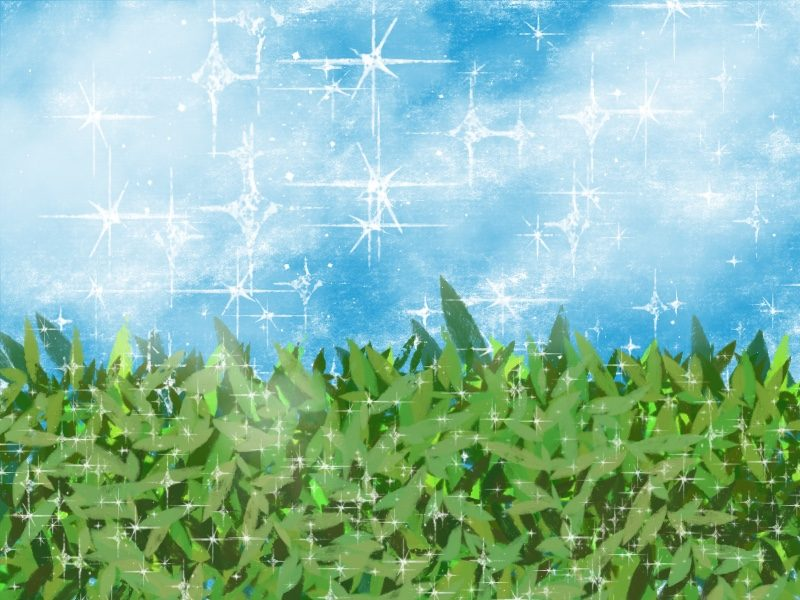

死にたいという気持ちの分解
生きる私は辛いことがあると「死にたい」という気持ちになる。本当の死を望んでいるわけじゃない。
生きている限り頑張ってしまう。
もう辛くてやめたいのに、「やめる」ができない。
「やすむ」こともできない。
駆り立てられるように、やらなきゃ、やらなきゃってなっちゃう。
それは些細なことでも積み重なっていく。
トイレットペーパー、補充しなきゃ。私が補充しなきゃ誰もやってくれない。困る人がでてくる。
洗濯回さなくちゃ。みんなが学校幼稚園会社で何も困らないように。
ハンドソープ足さなきゃ。手を洗えるように。
自分が疲れてる、休みたい、なんて出来ない。子供たちが帰るまでに済ませないとやる時間がない。
自分を駆り立てて、うつ症状の重い体を引きずって、やめられずに布団のシーツを洗い、服の衣替えをし、予定を確認する。
いつ休めば？
休むためには大怪我するか病気になるしかない。
死ねばやめられる。
こんな考え方間違ってるのはわかってる。でも止められないんだ。誰か止めて欲しい。止めて欲しい。その気持ちが「死にたい」。私の場合は。
休んでいいんだよ、休んでねなんて声がけは力にならない。
徹底して私が休める環境を用意して欲しい。
夕飯も用意して欲しい。洗濯物も取り込んで欲しい。子供のお迎えも行って欲しい。私がひたすら布団で休めるように環境を整えて欲しい。心配事がなくなって、代わりにやってくれる人がいて、そこで初めて安心して休める。
「死にたい」ぐらいのうつ症状が出ている時は体がとにかく重い。心も重い。まるで胸がつっかえているように感じる。
何も考えられないし決められない。
そういうときは、とにかく鬼束ちひろの月光を聞いている。明るい曲を聴くより、暗いメロディーが悲しい歌詞が癒してくれる。
ご飯は食欲がなくなってしまうので、お湯を注ぐだけとか、食べるだけのものを用意しておく。手の込んだものは無理だ。
布団で横になっていてもぐずぐず考えて辛い時はあえてベランダで外を見る。
家族には状況が悪いので休みたいと公言しておく。
頓服はもったいぶらずに使う。
うつ症状は頑張っても治らないので、むしろ休むことが大事になる。自分が楽しいと思うことがなくなっている状態なので、いつも笑って見てたYouTubeをみることすらしんどい。
奮闘してはいけない。落ち込みと戦っては意味ない。計画を立てても目標を決めても首を絞めるだけ。
何もしない。何もしないことへの焦りもある。
死にたいからどうやって死のうまで考え始めたら危ない。医者に行ったほうがいい。強めの頓服を使ってでも衝動性は抑えた方が良い。本人のためにも家族のためにも。
うつ期はつらい。どうしたらいいのかもわからない。脳みそのせいでそうなってるんだから自分の気合いでコントロールできる物でもない。
辛いなりに毎日生きなきゃならない。